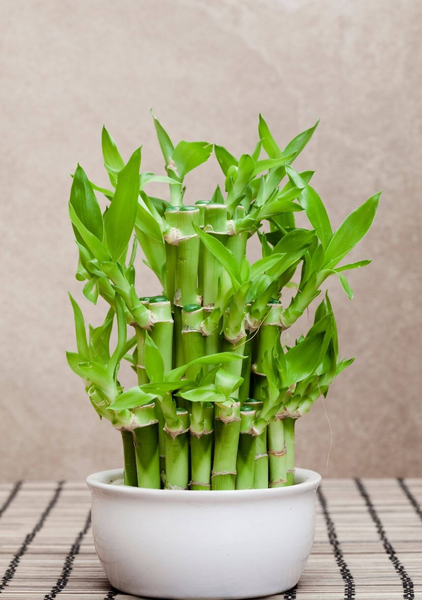

Bambu de la suerte
Conocido como bambú de la suerte o “lucky bambu”, esta planta es un símbolo de la fortuna según el Feng Shui. Perteneciente a la familia de dracaena sanderiana, el bambú de la suerte es una planta tropical nativa de África y el sudeste asiático, por lo que es muy adaptable y fácil de cuidar.
Valor: $10.000 CLP

sanseviera
Es una planta muy resistente y longeva que, incluso sin cuidados, sobrevive perfectamente. Su aspecto, con hojas erguidas y duras que pueden alcanzar 50 cm de altura, aporta a esta planta un aspecto escultural ideal para la decoración de interiores modernos.
Valor: $20.000 CLP
Strelitzia
Por su resistencia y sus condiciones de cultivo, se trata de una planta que puede crecer de maravilla en interior y exterior, siempre que se cumplan ciertos requisitos importantes para ella. Al aire libre está bien todo el año si la zona es de clima templado y los inviernos no son demasiado fríos (y la temperatura no cae por debajo de los 5ºC). El rango de temperatura ideal para la Strelitzia oscila entre 5 y 25ºC. Si vives en un lugar de inviernos rigurosos debes cultivarla en el interior. Búscale un lugar en el que reciba mucha luz (esto es clave), aunque evitando los rayos de sol directos para no quemar sus hojas.
Valor: $50.000 CLP